Think Tank Flexible timber construction systems for new housing typologies - Grymsdyke farm [London]-UK TimberExpo [Birmingham]
Different states in construction are addressing the quest of flexibility in architecture; bypassing the modernist idea of - form follows function - and allow for the need of rapid and frequent alterations in todays building.
We are constructing two architectural states which are designed to showcase the possibility (story) of flexibility going from a more closed compact “state”, state 1 in Grymsdyke Farm; lived in by one of the students. To an exploded, more open structure, state 2, showcasing different possible modes of dwelling for the Timber Expo 2018. These two states only exhibit two design possibilities out of the many states that the outcome of the timber construction system can be arranged in.
Prototype
The combination of disciplines and students in the Think Tank lead to an alphabet of elements, that is connected and structurally enhanced by steel cables and imagined in the farm and Expo state. The alphabet is constructed of 9 mm plywood. These different letters handle a specific condition within the design based on geometry, configuration and location.
We are anticipating more states and locations to follow and build on the expertise and great collaboration of people coming together in a making and debating Think Tank, sharing ideas and trigger a collective creative response to this flexible quest posed by todays contemporary living.
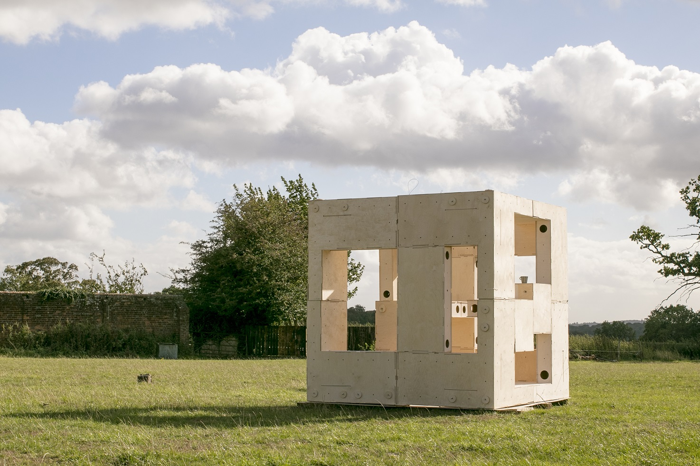
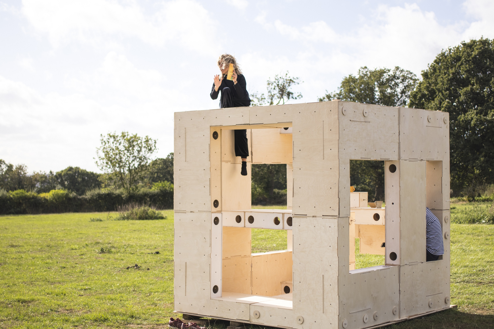
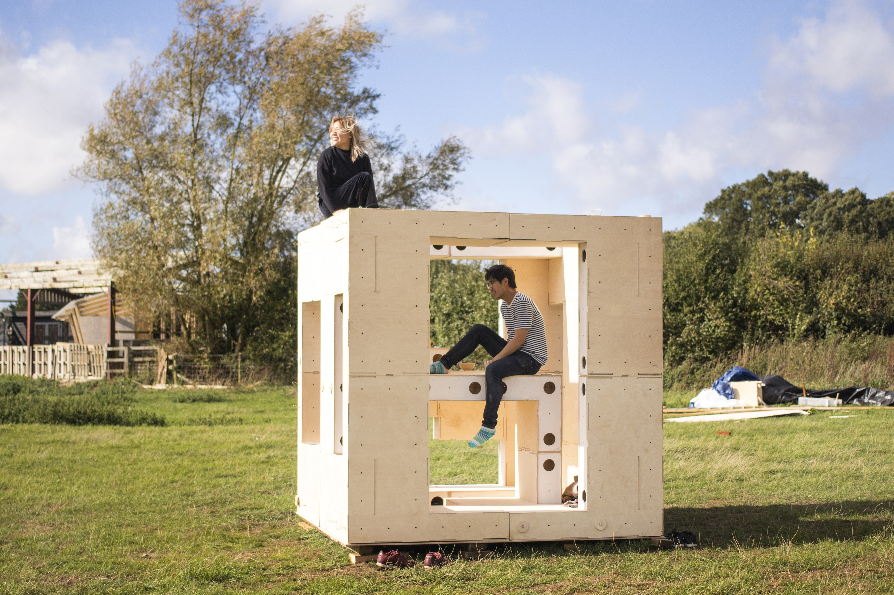
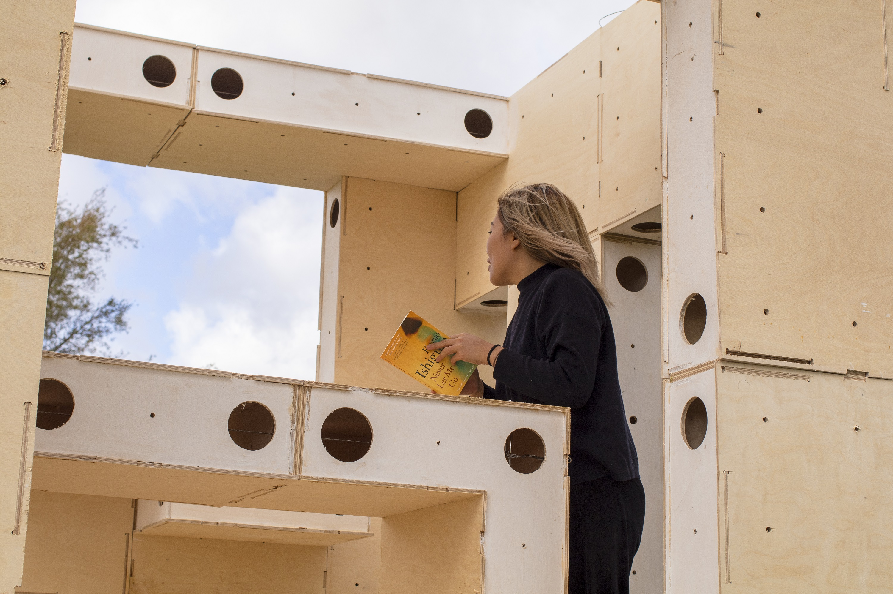
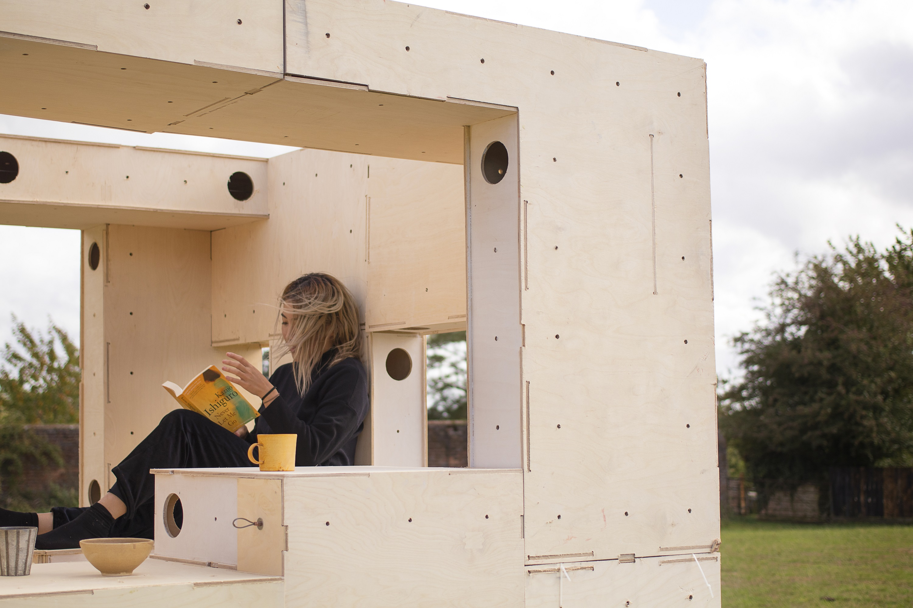
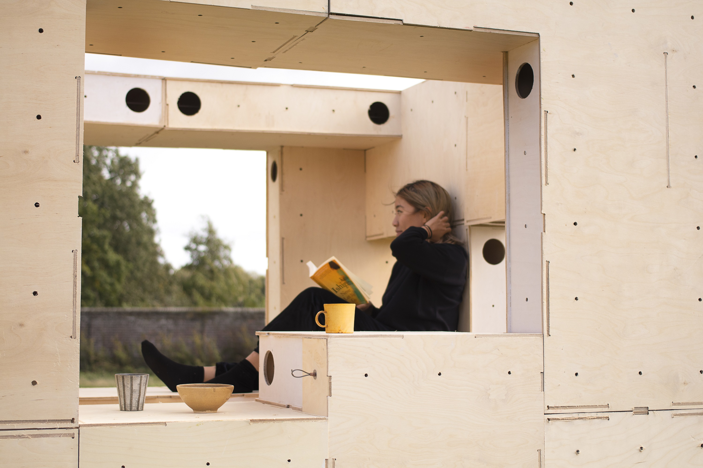
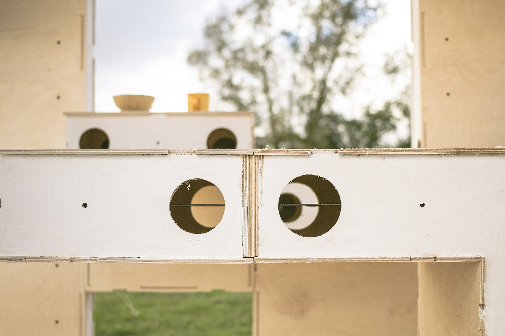
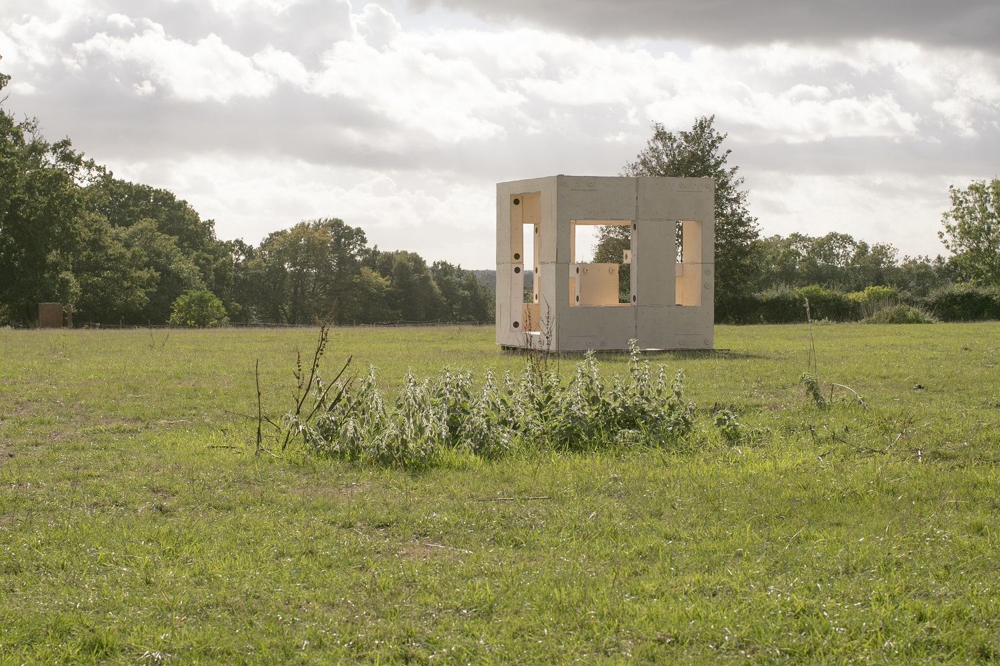
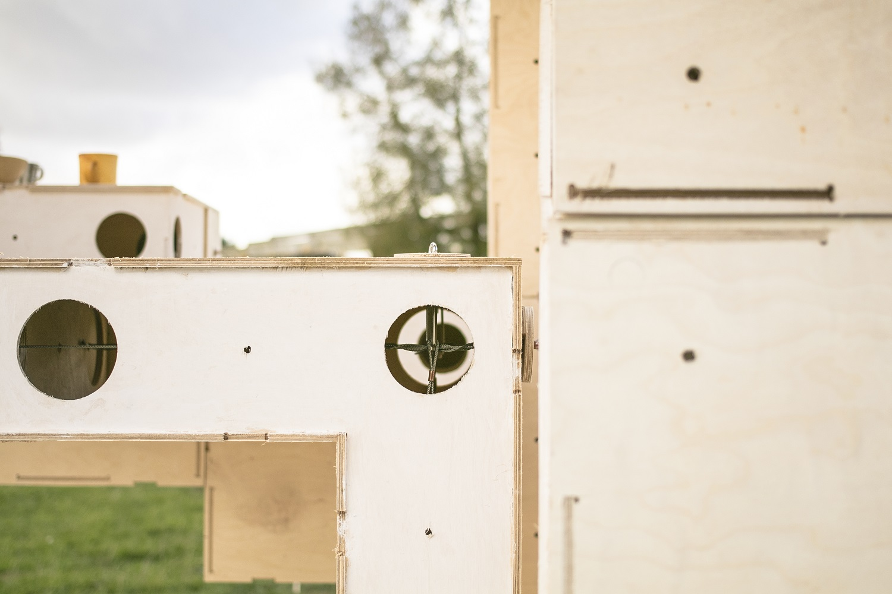
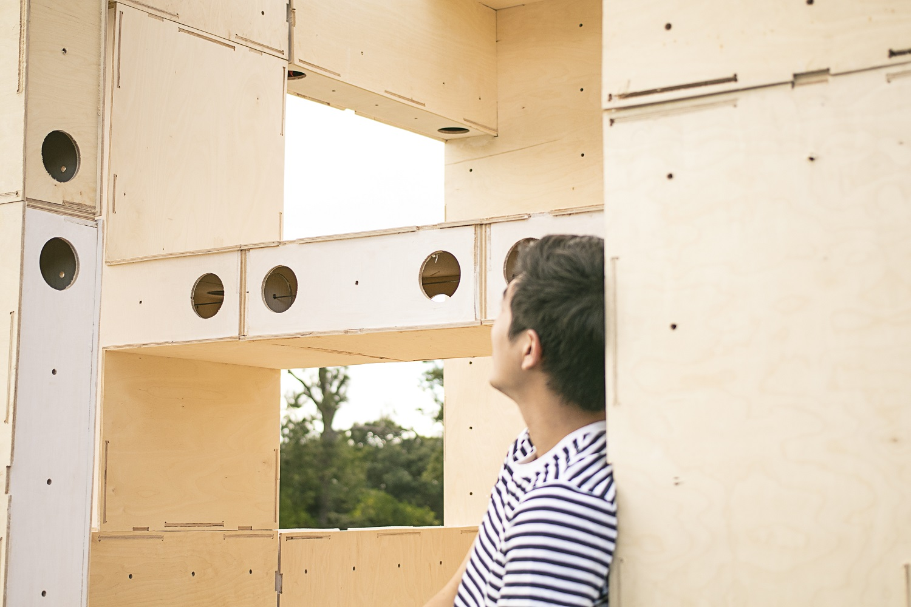
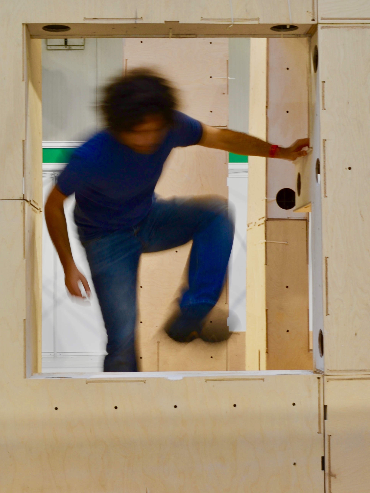
During a two day Think Tank using digital and physical prototyping, followed by a week of 1:1 design and construction at Grymsdyke farm; architects, engineers, fabricators and students debated, designed and constructed the presented flexible construction system. We build on ideas from Jean Prouve and Alejandro Arevena, allowing buildings to grow and change over time, as well as personal developed timber construction systems. Participants of the Think Tank combine their knowledge of timber construction methods developed in their practice as for example MINKA, a timber plywood construction system in the US, as well as MassBespoke’s cassette systems and discrete timber building blocks.
Serve as a showroom of building system
Prototype for check the feasability of construction
Host some talks
Access an main gate UK timber construction expo 2018 in the 2 STATE configuration
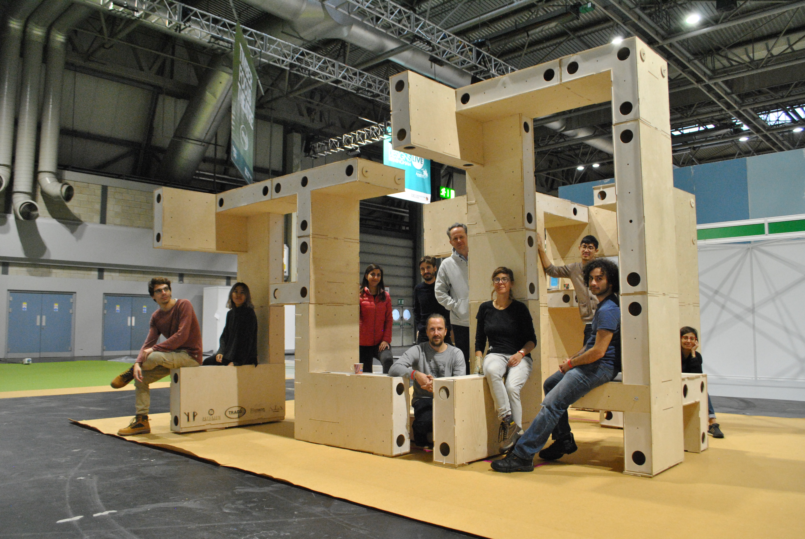
Fabrication
It is cnc cutted frame with steel cable that serve as post tensioning system of the whole structure. Each module es independant and structuraly self stable. The system is hold together with the steel cables to allow the formation of complex shapes and cantilevers.
Organisers.
1. Manja van de Worp: YIP / NOUS engineering London Minka / Mass Bespoke
2. Kasper Ax: AJGA Minka (Denmark)
3. Eduardo Chamorro IAAC + Fab Lab Korea [Spain]
Participants
1. Matt Murphy MassBespoke + Baulyons Architects
2. Raimund Krenmueller IAAC + Expert in Digital Fabrication & Computational Design [Spain]
3. Tom Svilans PHD Innochain /CITA: Integrating material performance- Institute: (D enmark )
4. Edouard Cabay Appareil + Collaborative design and construction by ALICE – EPFL [Spain]
5. Cristina Gamboa: LaCol - Timber COOP structure in Barcelona [Spain]
7. Morena Caredda : Atelier One - CLT modular buildings / http://home.leapfactory.it/
8. Georgios Eftaxiopoulos: AA Phd. Stásis: Towards a Critique of Flexibility in Architecture
9. Danae Polyviou - AKT II - Modular Timber high rise design
10. Gilles Retsin - Discrete timber design: Tallinn Art Biennale
11. Nigel Papworth RISE - 3d printed timber housing [ Sweden ]